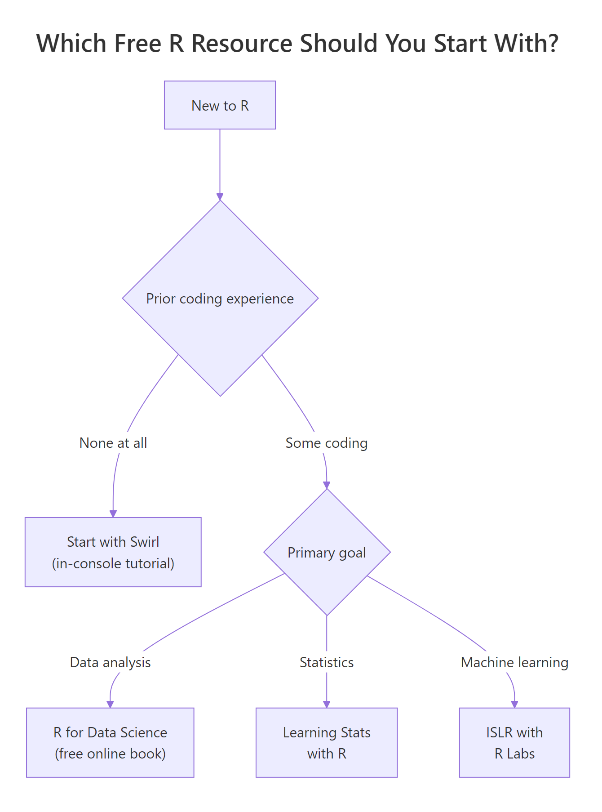

15 Best Free R Courses : Ranked Honestly by Learning Outcome
You can learn R to a professional level without spending a cent. These 15 free R courses, books, and practice platforms are ranked by how much they will actually improve your R skills — not by enrollment count, brand name, or certificate value.
How did we rank these free R courses?
Anyone can list free courses. Ranking them honestly is harder, because a course with 500,000 enrollments is not automatically better than a book with a few thousand readers. We judged every resource on a single question: how much R will you actually know after finishing it? That forced us to weight depth, exercises, and feedback loops far more heavily than credentials or marketing polish.
Each of the 15 resources below is scored on four dimensions:
- Depth (1-5) — how much ground it covers, from syntax to real analysis workflows.
- Exercise quality (1-5) — whether you actually write code with some form of feedback, not just watch.
- Freshness (1-5) — how well it reflects the 2026 R ecosystem: tidyverse, the native
|>pipe, Quarto, and modern package patterns. - Signal-to-noise (1-5) — whether every hour you spend returns real skill, or gets diluted by marketing, filler, or paid upsells.

Figure 1: A quick decision path for picking your first free R resource based on prior coding experience and your primary goal.
Which free R resources are best for absolute beginners?
If you have never written a line of R, three resources stand out. Each one reduces the fear of a blinking cursor in different ways, and together they form a complete first month.
1. Swirl — in-console R tutorials
URL: swirlstats.com Cost: Free Depth: 3 · Exercises: 5 · Freshness: 4 · Signal-to-noise: 5
Swirl installs as an R package and teaches R from inside R itself. Instead of switching between a video tab and a console, you sit in the console and Swirl walks you through lessons, checks each answer, and nudges you toward the correct one. The "R Programming" and "Getting and Cleaning Data" courses cover the base-R fundamentals almost every other resource assumes you already know.
Best for: Absolute beginners who want maximum hand-holding. Limitation: The core Swirl courses are base R; they don't cover ggplot2 or modern tidyverse workflows. Plan a second resource for weeks 3 onward.
2. R for Data Science (2nd Edition)
URL: r4ds.hadley.nz Cost: Free online (paid print edition) Depth: 5 · Exercises: 4 · Freshness: 5 · Signal-to-noise: 5
Written by Hadley Wickham (creator of dplyr, ggplot2, tidyverse) and Mine Çetinkaya-Rundel, this is the single most effective free resource in the R ecosystem. It teaches the complete data-science workflow — import, tidy, transform, visualise, model, communicate — with worked examples, exercises at the end of every chapter, and a tone that trusts the reader without talking down.
Best for: Almost everyone. If you read only one free R book, read this one. Limitation: Assumes you are comfortable typing commands into a terminal. Pure non-coders may want one week of Swirl first.
3. Google Data Analytics Certificate (Coursera, free audit)
URL: coursera.org — Google Data Analytics Cost: Free to audit; certificate paywalled Depth: 3 · Exercises: 4 · Freshness: 5 · Signal-to-noise: 4
Google's professional certificate uses R as one of its core tools alongside spreadsheets and SQL. The R modules are aimed at career switchers and keep scope narrow: data cleaning, summarisation, and visualisation. You won't learn advanced statistics or modelling, but the framing — "here's how analysts actually use R at work" — is useful when you need motivation.
Best for: Career switchers who want an employer-friendly framing. Limitation: R is roughly a quarter of the course. Half your time goes to non-R topics.
Which free MOOCs teach R most rigorously?
MOOCs give you the curriculum of a university course without the tuition. These four are the deepest free options, with lectures, readings, and graded exercises (some behind the audit paywall).
4. Johns Hopkins Data Science Specialization (Coursera)
URL: JHU Data Science Specialization Cost: Free to audit most courses; certificate $49/month Depth: 5 · Exercises: 3 · Freshness: 3 · Signal-to-noise: 4
A ten-course specialization from Roger Peng, Jeff Leek, and Brian Caffo at the Johns Hopkins biostatistics department. It covers R programming, data cleaning, exploratory analysis, statistical inference, regression, machine learning, and reproducible research. The breadth is unmatched by any other free offering.
Best for: Learners who want a structured, university-grade curriculum and will stick with six-plus months of work. Limitation: Parts of the early courses predate the tidyverse and feel dated. Supplement with R for Data Science for modern idioms.
5. HarvardX PH525: Statistics and R (edX)
URL: HarvardX PH525.1x Cost: Free to audit; verified certificate $149 Depth: 3 · Exercises: 3 · Freshness: 3 · Signal-to-noise: 4
Part of Rafael Irizarry's Data Analysis for Life Sciences series. Teaches R inside a biostatistics frame: probability, distributions, inference, exploratory analysis. The advantage is that every example is a real biological dataset, so readers who learn better through concrete problems retain more.
Best for: Learners from biology, epidemiology, or health sciences. Limitation: The life-sciences framing can feel narrow if you come from a business or social-science background.
6. Statistical Learning with R (Stanford Online)
URL: Stanford Statistical Learning Cost: Free Depth: 4 · Exercises: 4 · Freshness: 4 · Signal-to-noise: 5
Trevor Hastie and Rob Tibshirani — two of the authors of the ISLR textbook — teach machine learning with R labs. The course is the video companion to ISLR, which means you get authors of a top textbook walking through their own material. Few paid courses match this.
Best for: Anyone serious about machine learning with R. Limitation: Assumes comfort with basic R and undergraduate statistics. Not a first course.
7. Duke Data Analysis with R Specialization (Coursera)
URL: Duke Data Analysis and Statistical Inference Cost: Free to audit Depth: 4 · Exercises: 3 · Freshness: 3 · Signal-to-noise: 4
A five-course Duke specialization that covers frequentist inference, linear and multiple regression, and a full course on Bayesian statistics using R — the latter is rare in free resources and alone justifies the spot on this list.
Best for: Learners who want Bayesian methods without paying for a textbook. Limitation: Some tooling (e.g., BayesFactor package) is older; expect to cross-reference current documentation.
What are the best free R books you can read today?
Books are the single most underrated free R resource. Several of the best R books ever written are published open-access by their authors. If you prefer deep reading to video, start here.
8. Advanced R (2nd Edition) — Hadley Wickham
URL: adv-r.hadley.nz Depth: 5 · Exercises: 3 · Freshness: 4 · Signal-to-noise: 5
The definitive guide to how R actually works under the hood: environments, lazy evaluation, S3/S4/R6 object systems, functional programming, metaprogramming, and performance. This is the book that turns an R user into an R programmer.
Best for: Intermediate R users (six-plus months of experience) who want to understand the language, not just call functions.
9. An Introduction to Statistical Learning with R (ISLR)
URL: statlearning.com Depth: 5 · Exercises: 4 · Freshness: 4 · Signal-to-noise: 5
James, Witten, Hastie, and Tibshirani's classic machine-learning textbook, free as a PDF. Covers regression, classification, resampling, regularisation, trees, SVMs, and unsupervised learning. Every chapter ends with hands-on R labs using built-in datasets. Paired with the Stanford Statistical Learning video course (#6 above), it is the best free ML-with-R curriculum on the internet.
Best for: Rigorously learning machine learning with R.
10. Learning Statistics with R — Danielle Navarro
URL: learningstatisticswithr.com Depth: 4 · Exercises: 3 · Freshness: 3 · Signal-to-noise: 5
Written for social-science undergraduates who need to learn statistics and R at the same time. Navarro's tone is conversational and unusually honest about why statistics is confusing. If you have ever been frustrated that textbooks present formulas before intuition, you will love this book.
Best for: Beginners who need statistics and R in one package.
11. Tidy Modeling with R — Max Kuhn & Julia Silge
URL: tmwr.org Depth: 5 · Exercises: 3 · Freshness: 5 · Signal-to-noise: 5
Written by the creators of the tidymodels framework, this is the modern answer to "how do I build ML models in R today?" It covers the full workflow — feature engineering, resampling, model tuning, workflow objects, and deployment considerations — in a tidyverse-native style.
Best for: Anyone doing applied machine learning in R in 2026. Limitation: Assumes you already know dplyr and basic modelling ideas.
Where can you practice R for free with real feedback?
Books and courses teach; practice platforms build skill. These three give you problems with some form of feedback loop — the part most "learn R" recommendations skip entirely.
12. Exercism R Track
URL: exercism.org/tracks/r Cost: Free (donation-supported) Depth: 3 · Exercises: 5 · Freshness: 5 · Signal-to-noise: 5
Exercism gives you progressively harder coding exercises and — crucially — human mentor feedback on your solutions. You write code, submit it, and a volunteer mentor who actually writes R for a living tells you how to make it better. Nothing else on this list offers that.
Best for: Learners who want their R style critiqued, not just their correctness checked. Limitation: Mentor response times vary. Queue delays of a few days are common.
13. TidyTuesday
URL: github.com/rfordatascience/tidytuesday Cost: Free Depth: 4 · Exercises: 5 · Freshness: 5 · Signal-to-noise: 5
Every Tuesday, a new real-world dataset is released and the R community spends the week exploring it. You post your analysis on social platforms and other participants give feedback. Over a year, you build a visible portfolio of 52 finished analyses — the single best free way to demonstrate R skills to employers.
Best for: Intermediate learners ready to build a public R portfolio.
filter(), mutate(), or geom_point(), spend two or three weeks on R for Data Science first. Jumping into TidyTuesday cold tends to produce frustration, not learning.14. Kaggle Learn: R Micro-Course
URL: kaggle.com/learn/r Cost: Free (account required) Depth: 2 · Exercises: 4 · Freshness: 4 · Signal-to-noise: 5
Kaggle's R track is short — roughly three to four hours of content — but every lesson runs inside a live notebook with exercises you complete in-browser. The real value is the surrounding Kaggle ecosystem: thousands of public R notebooks on real datasets you can fork, run, and modify.
Best for: Learners who want to jump into real datasets immediately after learning basics. Limitation: The R track covers only fundamentals; Kaggle's deeper ML content is mostly Python.
15. R-bloggers
URL: r-bloggers.com Cost: Free Depth: 3 · Exercises: 1 · Freshness: 5 · Signal-to-noise: 4
Not a course, but the central aggregator of R content on the open web. Hundreds of R practitioners cross-post tutorials, analyses, and package announcements here every week. Treat it as your ongoing professional development once you finish a structured course.
Best for: Staying current once you have foundational skills.
Which free resources teach statistics alongside R?
If your real goal is statistics and R is the tool, three free resources form an unusually complete package. Read Learning Statistics with R (#10) for the applied foundation. Work through ISLR (#9) for intermediate and advanced methods. And for any concept either book glosses over, watch the corresponding video from StatQuest with Josh Starmer — the clearest statistical explanations on the internet, full stop.
How should you sequence these free resources for maximum learning?
Picking the best resource is easy. Following through is hard. A 24-week path that uses nothing but the resources above, ordered by what maximises your skill curve, looks like this:
| Weeks | Resource | Focus | Hours/week |
|---|---|---|---|
| 1-2 | Swirl — R Programming | Base R basics | 4-6 |
| 3-8 | R for Data Science (chs 1-16) | Tidyverse workflow | 5-7 |
| 5-24 | StatQuest videos (as needed) | Statistical intuition | 1-2 |
| 9-12 | Learning Statistics with R | Stats foundations | 4-6 |
| 13-16 | David Robinson screencasts + TidyTuesday | Expert EDA + portfolio | 4-6 |
| 17-20 | ISLR + Stanford Statistical Learning | Machine learning | 6-8 |
| 21-24 | Tidy Modeling with R | Modern ML workflows | 5-7 |
| Ongoing | Exercism R track | Coding style + feedback | 1-2 |
Six months of focused effort using only free resources will take you past the level of most paid bootcamp graduates. The only cost is your time.
Summary
| # | Resource | Type | Level | Depth | Exercises | Freshness | Best Feature |
|---|---|---|---|---|---|---|---|
| 1 | Swirl | Interactive | Beginner | 3 | 5 | 4 | In-console hand-holding |
| 2 | R for Data Science (2e) | Book | Beginner | 5 | 4 | 5 | Best overall starting point |
| 3 | Google Data Analytics | MOOC | Beginner | 3 | 4 | 5 | Career-focused framing |
| 4 | JHU Data Science | MOOC | Beginner | 5 | 3 | 3 | Widest curriculum |
| 5 | HarvardX PH525 | MOOC | Beginner | 3 | 3 | 3 | Biostatistics angle |
| 6 | Stanford Statistical Learning | MOOC | Intermediate | 4 | 4 | 4 | Textbook authors teaching |
| 7 | Duke Data Analysis | MOOC | Intermediate | 4 | 3 | 3 | Free Bayesian course |
| 8 | Advanced R | Book | Advanced | 5 | 3 | 4 | R internals mastery |
| 9 | ISLR | Book | Intermediate | 5 | 4 | 4 | ML theory with R labs |
| 10 | Learning Stats with R | Book | Beginner | 4 | 3 | 3 | Honest stats + R together |
| 11 | Tidy Modeling with R | Book | Intermediate | 5 | 3 | 5 | Modern ML workflow |
| 12 | Exercism R Track | Practice | All | 3 | 5 | 5 | Human mentor feedback |
| 13 | TidyTuesday | Practice | Intermediate | 4 | 5 | 5 | Real datasets + portfolio |
| 14 | Kaggle Learn R | Practice | Beginner | 2 | 4 | 4 | In-browser notebooks |
| 15 | R-bloggers | Reference | All | 3 | 1 | 5 | Stay current |
References
- Wickham, H. & Çetinkaya-Rundel, M. — R for Data Science (2nd Edition). O'Reilly (2023). Free online.
- Wickham, H. — Advanced R (2nd Edition). CRC Press (2019). Free online.
- James, G., Witten, D., Hastie, T., & Tibshirani, R. — An Introduction to Statistical Learning with Applications in R. Springer. Free PDF.
- Kuhn, M. & Silge, J. — Tidy Modeling with R. O'Reilly (2022). Free online.
- Navarro, D. — Learning Statistics with R. Free online.
- Swirl Statistics — Interactive in-R tutorials. swirlstats.com.
- R Core Team — An Introduction to R. CRAN.
- Posit (formerly RStudio) — Official R cheat sheets. posit.co/resources/cheatsheets.
- Exercism — R Track. exercism.org/tracks/r.
- R for Data Science community — TidyTuesday weekly dataset challenge. GitHub.
Continue Learning
- Best R Books — Full reading list, including paid titles worth their price.
- How to Learn R — 12-month structured roadmap from zero to employable.
- R Certifications Guide — When free courses are not enough and a paid certificate pays off.